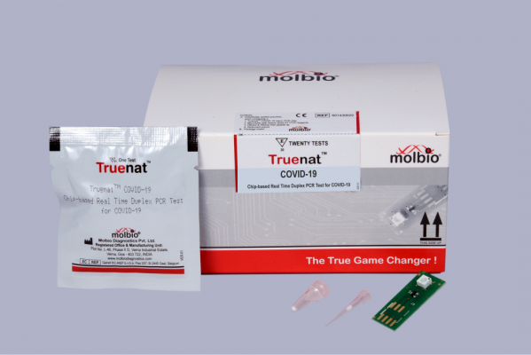
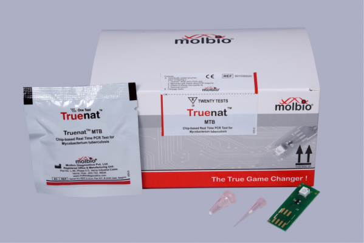

-
Truenat (for COVID-19/SARS CoV-2) - Default no. of units (50) w/
choice to +/-
-
Truelab - Display all 3 (selectable) with default no. o units
(1).+/- option
-
Trueprep Device - default number of units (1), default number is
multiples of 2 units when Truelab Quattro is selected. +/-
option
-
Trueprep AUTO Sample Prep Universal - Selectable I same no. of
units selection in (1) | Toggle select- ability with (6)
- Truemix - Auto selected
-
STABILYSE - Selectable | same no. of units selection in (1) |
Toggle select-ability with (4)

-
Truenat (for MTB) - Default no. of units - 50 w/ choice to +/-
-
Truelab - Display all 3 (selectable) with default no. of units -
1.+/- option
-
Trueprep Device - default number of units - 1. default number is
multiples of 2 units when Truelab Quattro is selected. +/-
option
-
Trueprep AUTO Sample Prep MTB - Selectable same no. of units
selection in (1) | Toggle select-ability with (6)
-
Truenat (for Selected Disease) - Default no. of units (50) w/
choice to +/-
-
Truelab - Display all 3 (selectable) with default no. of units
(1),+/- option
-
Truepreo Device - default number of units (1). default number is
multioles of 2 units when Truelab Quattro is selected. +/-
option
-
Trueprep AUTO Sample Preo Universal - Selectable | same no. of
units selection in (1)